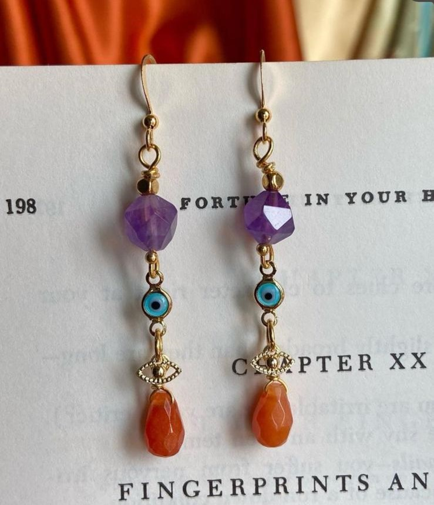
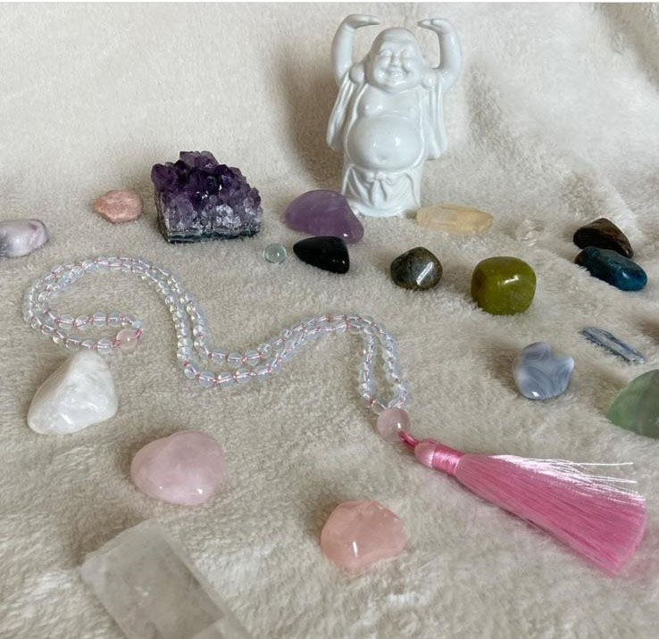

Made with opalite, citrine amethyst and clear quartz.
Powerful citrine and calming amethyst, perfect combination to enhance
your inner shine.
1 / 9

2 / 9

Amethyst and orange Jade made the perfect combination
for beauty and tranquility.
for beauty and tranquility.
3 / 9

All seeing eye, these protection earing's are made with
fluorite, citrine and lapis lazuli.
fluorite, citrine and lapis lazuli.
4 / 9

Mala Beads, specifically made with rose quartz accents
for self-love meditation.
for self-love meditation.
5 / 9

Elastic bracelet made with mahogany obsidian quartz,
jade and love. The elephant is a symbol of wisdom and good luck.
jade and love. The elephant is a symbol of wisdom and good luck.
6 / 9

Elastic bracelet made with agate quartz, jade and love.
The elephant is a symbol of wisdom and good luck.
The elephant is a symbol of wisdom and good luck.